Ugropy power users
In this final section of the tutorial, we will explore some advanced features of ugropy that were not covered in the previous sections. These features are intended for users who want to customize the behavior of the already implemented models in ugropy or who want to implement their own models.
Non-optimal solutions
As explained in previous sections, ugropy allows you to search for multiple solutions for the models, but all these solutions are optimal (they use the same number of groups to represent the molecule). However, it is possible to search for non-optimal solutions along with the optimal ones. This is useful when you want to find all possible combinations of fragments that cover the molecule. Please note that this feature is intended for research purposes and is not recommended for actually
modeling molecules.
We can enable this for all ugropy models using the search_nonoptimal parameter:
[1]:
from ugropy import unifac
solutions = unifac.get_groups(
"9,10-dihydroanthracene",
search_multiple_solutions=True, # If this is False, search_nonoptimal is ignored
search_nonoptimal=True,
)
# Three solutions were found:
solutions
[1]:
[<ugropy.core.frag_classes.gibbs_model.gibbs_result.GibbsFragmentationResult at 0x7f25881316a0>,
<ugropy.core.frag_classes.gibbs_model.gibbs_result.GibbsFragmentationResult at 0x7f2569dff8c0>,
<ugropy.core.frag_classes.gibbs_model.gibbs_result.GibbsFragmentationResult at 0x7f2569109d30>]
We can visualize all the obtained solutions:
[2]:
solutions[0].draw(width=600)
[2]:
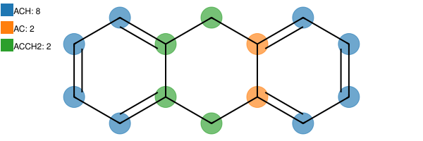
[3]:
solutions[1].draw(width=600)
[3]:
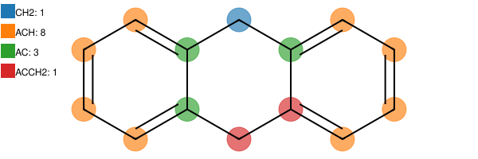
[4]:
solutions[2].draw(width=600)
[4]:
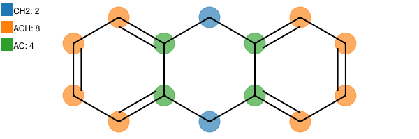
If you are an experienced user of UNIFAC-like models, you may notice that the only “correct” solution is the first one. When non-optimal solutions are enabled, the algorithm will always find the optimal solutions first, and then it will search for non-optimal solutions in a “non-optimal” order.
Changing the default ILP solver
By default, ugropy uses the standard CBC solver from the PuLP library. However, PuLP supports a wide variety of solvers. Changing the ILP solver can significantly impact the library’s execution time. A great alternative is the XPRESS_PY solver.
First, you must install XPRESS:
pip install xpress
Then, you can change the default solver by passing it as an argument:
[5]:
from ugropy import unifac
unifac.get_groups("toluene", solver_arguments={"solver": "XPRESS_PY"}).draw(width=600)
/home/runner/.local/lib/python3.12/site-packages/pulp/apis/xpress_api.py:751: LicenseWarning: Using the Community license in this session. If you have a full Xpress license, pass the full path to your license file to xpress.init(). If you want to use the FICO Community license and no longer want to see this message, use the following code before using the xpress module:
xpress.init('/home/runner/.local/lib/python3.12/site-packages/xpresslibs/bin/community-xpauth.xpr')
model = xpress.problem()
/home/runner/.local/lib/python3.12/site-packages/pulp/apis/xpress_api.py:774: DeprecationWarning: Deprecated in Xpress 9.8: use problem.addCols instead.
model.addcols(obj, [0] * (len(obj) + 1), [], [], lb, ub, names, ctype)
[5]:
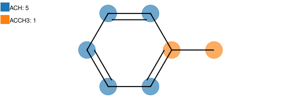
Understanding model instances and their configuration
ugropy is designed using the singleton pattern; therefore, all the models we have been using throughout this tutorial are instances of the FragmentationModel class. This class possesses several attributes that can be used to inspect the models’ information and definitions.
Each model in ugropy is composed of two distinct classes: FragmentationModel and FragmentationResult.
The FragmentationModel class contains all the fundamental information about a model, such as its fragment definitions. It serves as the base class required to define a minimal model and implements the get_groups method. The specific models in ugropy are not direct instances of this base class, but rather instances of subclasses that inherit from it. For example, the UNIFAC model is an instance of the GibbsModel class (a subclass of FragmentationModel). The advantage of these
subclasses is that they provide additional methods (such as multiple-solution filtering). Furthermore, a GibbsModel requires more detailed fragment information to be instantiated, such as the \(R\) and \(Q\) parameters.
Finally, each FragmentationModel returns an instance of its specific FragmentationResult subclass when the get_groups method is called. In the case of a GibbsModel, the get_groups method returns a GibbsFragmentationResult instance (which inherits from FragmentationResult). This architectural design allows different models to perform specific post-processing tasks after fragment detection. For instance, the GibbsFragmentationResult class automatically calculates
the \(R\) and \(Q\) values of the solution, while the JobackFragmentationResult class computes the Joback group-contribution properties.
Understanding this architecture is important because it guarantees that while all models share the core attributes and methods required by the FragmentationModel base class, they also offer specialized features depending on their specific subclass.
Let’s examine the documentation of a base FragmentationModel class (you can always check the API documentation for the complete list of methods and attributes).
[6]:
from ugropy import FragmentationModel
help(FragmentationModel)
Help on class FragmentationModel in module ugropy.core.frag_classes.base.fragmentation_model:
class FragmentationModel(builtins.object)
| FragmentationModel(subgroups: pandas.DataFrame, allow_overlapping: bool = False, allow_free_atoms: bool = False, fragmentation_result: ugropy.core.frag_classes.base.fragmentation_result.FragmentationResult = <class 'ugropy.core.frag_classes.base.fragmentation_result.FragmentationResult'>) -> None
|
| FragmentationModel class.
|
| All ugropy supported models are an instance of this class. This class must
| be inherited to create a new type of FragmentationModel.
|
| Parameters
| ----------
| subgroups : pd.DataFrame
| Model's subgroups. Index: 'group' (subgroups names). Mandatory columns:
| 'smarts' (SMARTS representations of the group to detect its presense in
| the molecule).
| allow_overlapping : bool, optional
| Whether allow overlapping or not, by default False
| allow_free_atoms : bool, optional
| Whether allow free atoms or not, by default False
| fragmentation_result : FragmentationResult, optional
| Fragmentation result class, by default FragmentationResult
|
| Attributes
| ----------
| subgroups : pd.DataFrame
| Model's subgroups. Index: 'group' (subgroups names). Mandatory columns:
| 'smarts' (SMARTS representations of the group to detect its presense in
| the molecule).
| detection_mols : dict
| Dictionary containing all the rdkit Mol object from the
| detection_smarts subgroups column.
|
| Methods defined here:
|
| __init__(self, subgroups: pandas.DataFrame, allow_overlapping: bool = False, allow_free_atoms: bool = False, fragmentation_result: ugropy.core.frag_classes.base.fragmentation_result.FragmentationResult = <class 'ugropy.core.frag_classes.base.fragmentation_result.FragmentationResult'>) -> None
| Initialize self. See help(type(self)) for accurate signature.
|
| detect_fragments(self, molecule: rdkit.Chem.rdchem.Mol) -> dict
| Detect all the fragments in the molecule.
|
| Return a dictionary with the detected fragments as keys and a tuple
| with the atoms indexes of the fragment as values. For example, n-hexane
| for the UNIFAC model will return:
|
| .. code-block:: python
|
| {
| 'CH3_0': (0,),
| 'CH3_1': (5,),
| 'CH2_0': (1,),
| 'CH2_1': (2,),
| 'CH2_2': (3,),
| 'CH2_3': (4,)
| }
|
| You may note that multiple occurrence of a fragment name will be
| indexed. The convention is always: <fragment_name>_i where `i` is the
| index of the occurrence.
|
| Parameters
| ----------
| mol : Chem.rdchem.Mol
| Molecule to detect the fragments.
|
| Returns
| -------
| dict
| Detected fragments in the molecule.
|
| filter_mostly_polarity(self, solutions: List[ugropy.core.frag_classes.base.fragmentation_result.FragmentationResult], polarity: str = 'polar') -> List[ugropy.core.frag_classes.base.fragmentation_result.FragmentationResult]
| Filter the solutions with most atoms occupied by "polarity" groups.
|
| Return the solutions with the largest number of atoms belonging to
| polar or apolar groups (specified by the user). The method inspects all
| the provided solutions and counts how many total atoms are occupied by
| the specified polarity groups. The solutions with the highest number of
| atoms belonging to the specified polarity groups are returned
| (hydrogens doesn't count). A group is considered polar if its SMARTS
| pattern contains at least one of the following atoms: {"O", "N", "S",
| "P", "F", "Cl", "Br", "I"}.
|
| Parameters
| ----------
| solutions : List[FragmentationResult]
| List of fragmentation results to filter.
| polarity : {"polar", "nonpolar"}, optional
| The type of polarity groups to consider ("polar" or "apolar"). by
| default, "polar"
|
| Returns
| -------
| List[FragmentationResult]
| Filtered list of fragmentation results.
|
| filter_mostly_polyatomic(self, solutions: List[ugropy.core.frag_classes.base.fragmentation_result.FragmentationResult]) -> List[ugropy.core.frag_classes.base.fragmentation_result.FragmentationResult]
| Filter the solutions with most atoms occupied by polyatomic groups.
|
| Return the solutions with the largest number of atoms belonging to
| polyatomic groups. The method inspects all the provided solutions and
| counts how many total atoms are occupied by polyatomic groups. The
| solutions with the highest number of atoms belonging to polyatomic
| groups are returned (hydrogens doesn't count).
|
| Parameters
| ----------
| solutions : List[FragmentationResult]
| List of fragmentation results to filter.
|
| Returns
| -------
| List[FragmentationResult]
| Filtered list of fragmentation results.
|
| get_groups(self, identifier: Union[str, rdkit.Chem.rdchem.Mol], identifier_type: str = 'name', solver: ugropy.core.ilp_solvers.ilp_solver.ILPSolver = <class 'ugropy.core.ilp_solvers.default_solver.DefaultSolver'>, search_multiple_solutions: bool = False, search_nonoptimal: bool = False, solver_arguments: dict = {}, **kwargs) -> Union[ugropy.core.frag_classes.base.fragmentation_result.FragmentationResult, List[ugropy.core.frag_classes.base.fragmentation_result.FragmentationResult]]
| Get the groups of a molecule.
|
| Parameters
| ----------
| identifier : Union[str, Chem.rdchem.Mol]
| Identifier of the molecule. You can use either the name of the
| molecule, the SMILEs of the molecule or a rdkit Mol object.
| identifier_type : str, optional
| Identifier type of the molecule. Use "name" if you are providing
| the molecules' name, "smiles" if you are providing the SMILES or
| "mol" if you are providing a rdkir mol object, by default "name"
| solver : ILPSolver, optional
| ILP solver class, by default DefaultSolver
| search_multiple_solutions : bool, optional
| Whether search for multiple solutions or not, by default False If
| False the return will be a FragmentationResult object, if True the
| return will be a list of FragmentationResult objects.
| search_nonoptimal : bool, optional
| If True, the solver will search for non-optimal solutions along
| with the optimal ones. This is useful when the user wants to find
| all possible combinations of fragments that cover the universe. By
| default False. If `search_multiple_solutions` is False, this
| parameter will be ignored.
| solver_arguments : dict, optional
| Dictionary with the arguments to be passed to the solver. For the
| DefaultSolver of ugropy you can change de PulP solver passing a
| dictionary like {"solver": "PULP_CBC_CMD"} and change the PulP
| solver. If empty it will use the default solver arguments, by
| default {}.
|
| Returns
| -------
| Union[FragmentationResult, List[FragmentationResult]]
| Fragmentation result. If search_multiple_solutions is False the
| return will be a FragmentationResult object, if True the return
| will be a list of FragmentationResult objects.
|
| mol_preprocess(self, mol: rdkit.Chem.rdchem.Mol) -> rdkit.Chem.rdchem.Mol
| Preprocess the molecule.
|
| This method is called before the detection of the fragments. It can be
| used to preprocess the molecule before the detection of the fragments.
| This allow to use RDKit functions to preprocess the molecule and make
| your SMARTS detection easier. The default implementation does nothing
| and leave the mol object as it is. You can inherit this class and
| override this method to preprocess the molecule.
|
| Parameters
| ----------
| mol : Chem.rdchem.Mol
| Molecule to preprocess.
|
| Returns
| -------
| Chem.rdchem.Mol
| Preprocessed molecule.
|
| set_fragmentation_result(self, molecule: rdkit.Chem.rdchem.Mol, solutions_fragments: List[dict], search_multiple_solutions: bool = False, **kwargs) -> Union[ugropy.core.frag_classes.base.fragmentation_result.FragmentationResult, List[ugropy.core.frag_classes.base.fragmentation_result.FragmentationResult]]
| Process the solutions and return the FragmentationResult objects.
|
| Parameters
| ----------
| molecule : Chem.rdchem.Mol
| Rdkit mol object.
| solutions_fragments : List[dict]
| Fragments detected in the molecule.
| search_multiple_solutions : bool, optional
| Whether search for multiple solutions or not, by default False
|
| Returns
| -------
| Union[FragmentationResult, List[FragmentationResult]]
| List of FragmentationResult objects.
|
| ----------------------------------------------------------------------
| Data descriptors defined here:
|
| __dict__
| dictionary for instance variables
|
| __weakref__
| list of weak references to the object
You can instantiate a base FragmentationModel class with the minimum required information.
This class expects a pandas DataFrame (subgroups parameter) that contains a specific index and a mandatory column. The index, named group, contains the names of the fragments, and the column, named smarts, contains the SMARTS patterns of the fragments.
The class also accepts a boolean parameter called allow_overlapping, which indicates whether the model allows the detected fragments within the molecule to overlap. Similarly, the allow_free_atoms argument indicates whether the model allows free atoms (atoms not occupied by any group). Finally, it requires a FragmentationResult class; by default, the base FragmentationResult class is used.
In the “Getting Started - About the Algorithm” section of the tutorial, we defined some models by identifying the fragments directly with the RDKit library. Now, let’s achieve the same result using the FragmentationModel class.
The fragments that we previously defined were:
# Definition of the fragments of our model
# Aliphatic CH2
ch2 = Chem.MolFromSmarts("[CX4H2]")
# Aromatic CH
ach = Chem.MolFromSmarts("[cH]")
# Aromatic C without H
ac = Chem.MolFromSmarts("[cH0]")
# Aromatic C bonded with aliphatic CH2
acch2 = Chem.MolFromSmarts("[cH0][CX4H2]")
# List of fragments of our model
fragments = [ch2, ach, ac, acch2]
fragments_names = ["CH2", "ACH", "AC", "ACCH2"]
Let’s build a DataFrame with this information (later, you can store it as a .csv file and load it with pandas to reinstantiate the model):
[7]:
import pandas as pd
from ugropy import FragmentationModel, FragmentationResult
subgroups = pd.DataFrame(
{
"group": ["CH2", "ACH", "AC", "ACCH2"],
"smarts": ["[CX4H2]", "[cH]", "[cH0]", "[cH0][CX4H2]"],
},
)
subgroups.set_index("group", inplace=True)
subgroups
[7]:
| smarts | |
|---|---|
| group | |
| CH2 | [CX4H2] |
| ACH | [cH] |
| AC | [cH0] |
| ACCH2 | [cH0][CX4H2] |
Now, let’s instantiate our model:
[8]:
our_model = FragmentationModel(
subgroups=subgroups,
allow_overlapping=False,
allow_free_atoms=False,
fragmentation_result=FragmentationResult
)
We can use this model to fragment a molecule in the same way we used the other ugropy models. The result will be a FragmentationResult instance (you can check the API documentation for more details on this class). Let’s test it with the same molecule we used in the “About the Algorithm” section of the tutorial.
[9]:
result = our_model.get_groups("c1ccccc1Cc2ccccc2", "smiles")
result.draw(width=600)
[9]:
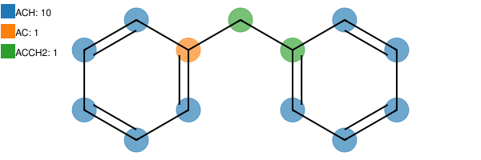
This returns the result as a dictionary of group occurrences, using the names we defined in our DataFrame as keys:
[10]:
result.subgroups
[10]:
{'ACH': 10, 'AC': 1, 'ACCH2': 1}
The specific molecule atoms covered by each fragment can be accessed via the subgroups_atoms attribute of the FragmentationResult instance. This attribute is a dictionary where the keys are the fragment names, and the values are lists of lists containing the atom indices covered by each occurrence. Consequently, the number of nested lists matches the total occurrences of that fragment in the molecule.
[11]:
result.subgroups_atoms
[11]:
{'ACH': [(0,), (1,), (2,), (3,), (4,), (8,), (9,), (10,), (11,), (12,)],
'AC': [(5,)],
'ACCH2': [(7, 6)]}
[12]:
type(result)
[12]:
ugropy.core.frag_classes.base.fragmentation_result.FragmentationResult
Since we did not allow overlapping in the previous example, the algorithm found the optimal solution, ensuring that each atom of the molecule was covered by only one fragment (while using the minimum number of groups).
Let’s see what happens if we allow overlapping:
[13]:
our_model_olap = FragmentationModel(
subgroups=subgroups,
allow_overlapping=True,
allow_free_atoms=False,
fragmentation_result=FragmentationResult
)
result_overlapping = our_model_olap.get_groups("c1ccccc1Cc2ccccc2", "smiles")
print(result_overlapping.subgroups)
print(result_overlapping.subgroups_atoms)
{'CH2': 1, 'ACH': 10, 'AC': 2, 'ACCH2': 2}
{'CH2': [(6,)], 'ACH': [(0,), (1,), (2,), (3,), (4,), (8,), (9,), (10,), (11,), (12,)], 'AC': [(5,), (7,)], 'ACCH2': [(5, 6), (7, 6)]}
As you can see, because overlapping was enabled, the algorithm directly returned all detected fragments in the molecule without searching for an optimal selection. Consequently, some atoms are now covered by multiple fragments.
Let’s inspect the internal attributes of our our_model instance. First, we can access the same parameters we specified during instantiation. Since these are attributes of the base class, they are available across all models in ugropy.
[14]:
print("Fragments of the model:")
print(our_model.subgroups)
print("Allow overlapping:", our_model.allow_overlapping)
print("Allow free atoms:", our_model.allow_free_atoms)
print("Fragmentation result class:", our_model.fragmentation_result)
Fragments of the model:
smarts
group
CH2 [CX4H2]
ACH [cH]
AC [cH0]
ACCH2 [cH0][CX4H2]
Allow overlapping: False
Allow free atoms: False
Fragmentation result class: <class 'ugropy.core.frag_classes.base.fragmentation_result.FragmentationResult'>
We have an additional, and important, attribute called detection_mols:
[15]:
our_model.detection_mols
[15]:
{'CH2': <rdkit.Chem.rdchem.Mol at 0x7f2565574120>,
'ACH': <rdkit.Chem.rdchem.Mol at 0x7f2565574190>,
'AC': <rdkit.Chem.rdchem.Mol at 0x7f2565574200>,
'ACCH2': <rdkit.Chem.rdchem.Mol at 0x7f2565574270>}
When you instantiate a model, during initialization, all the fragments defined in the DataFrame are used to create a dictionary. This dictionary contains the fragment names as keys, and the corresponding RDKit Mol objects as values, which are created internally as:
from rdkit import Chem
mol = Chem.MolFromSmarts(smarts)
For this reason, all the SMARTS patterns we define must be compatible with the RDKit library. This attribute is used internally by the get_groups method to search for fragments within the molecule. Pre-building these objects avoids recreating the RDKit Mol instances every time get_groups is called, significantly optimizing execution time.
As mentioned before, these are the attributes common to any FragmentationModel subclass, but specific subclasses can implement additional attributes. For example, an instance of the GibbsModel class possesses all the core attributes we just explored, plus several others:
[16]:
from ugropy import unifac
# Commented out to avoid printing a large DataFrame
# print("Fragments of the model:", unifac.subgroups)
print("Allow overlapping:", unifac.allow_overlapping)
print("Allow free atoms:", unifac.allow_free_atoms)
print("Fragmentation result class:", unifac.fragmentation_result)
print("Detection mol objects:", unifac.detection_mols)
Allow overlapping: False
Allow free atoms: False
Fragmentation result class: <class 'ugropy.core.frag_classes.gibbs_model.gibbs_result.GibbsFragmentationResult'>
Detection mol objects: {'CH3': <rdkit.Chem.rdchem.Mol object at 0x7f25691f4040>, 'CH2': <rdkit.Chem.rdchem.Mol object at 0x7f25691f40b0>, 'CH': <rdkit.Chem.rdchem.Mol object at 0x7f25691f4120>, 'C': <rdkit.Chem.rdchem.Mol object at 0x7f25691f4190>, 'CH2=CH': <rdkit.Chem.rdchem.Mol object at 0x7f25691f4200>, 'CH=CH': <rdkit.Chem.rdchem.Mol object at 0x7f25691f4270>, 'CH2=C': <rdkit.Chem.rdchem.Mol object at 0x7f25691f42e0>, 'CH=C': <rdkit.Chem.rdchem.Mol object at 0x7f25691f4350>, 'ACH': <rdkit.Chem.rdchem.Mol object at 0x7f25691f43c0>, 'AC': <rdkit.Chem.rdchem.Mol object at 0x7f25691f4430>, 'ACCH3': <rdkit.Chem.rdchem.Mol object at 0x7f25691f44a0>, 'ACCH2': <rdkit.Chem.rdchem.Mol object at 0x7f25691f4510>, 'ACCH': <rdkit.Chem.rdchem.Mol object at 0x7f25691f4580>, 'OH': <rdkit.Chem.rdchem.Mol object at 0x7f25691f45f0>, 'CH3OH': <rdkit.Chem.rdchem.Mol object at 0x7f25691f4660>, 'H2O': <rdkit.Chem.rdchem.Mol object at 0x7f25691f46d0>, 'ACOH': <rdkit.Chem.rdchem.Mol object at 0x7f25691f4740>, 'CH3CO': <rdkit.Chem.rdchem.Mol object at 0x7f25691f47b0>, 'CH2CO': <rdkit.Chem.rdchem.Mol object at 0x7f25691f4820>, 'HCO': <rdkit.Chem.rdchem.Mol object at 0x7f25691f4890>, 'CH3COO': <rdkit.Chem.rdchem.Mol object at 0x7f25691f4900>, 'CH2COO': <rdkit.Chem.rdchem.Mol object at 0x7f25691f4970>, 'HCOO': <rdkit.Chem.rdchem.Mol object at 0x7f25691f49e0>, 'CH3O': <rdkit.Chem.rdchem.Mol object at 0x7f25691f4a50>, 'CH2O': <rdkit.Chem.rdchem.Mol object at 0x7f25691f4ac0>, 'CHO': <rdkit.Chem.rdchem.Mol object at 0x7f25691f4b30>, 'THF': <rdkit.Chem.rdchem.Mol object at 0x7f25691f4ba0>, 'CH3NH2': <rdkit.Chem.rdchem.Mol object at 0x7f25691f4c10>, 'CH2NH2': <rdkit.Chem.rdchem.Mol object at 0x7f25691f4c80>, 'CHNH2': <rdkit.Chem.rdchem.Mol object at 0x7f25691f4cf0>, 'CH3NH': <rdkit.Chem.rdchem.Mol object at 0x7f25691f4d60>, 'CH2NH': <rdkit.Chem.rdchem.Mol object at 0x7f25691f4dd0>, 'CHNH': <rdkit.Chem.rdchem.Mol object at 0x7f25691f4e40>, 'CH3N': <rdkit.Chem.rdchem.Mol object at 0x7f25691f4eb0>, 'CH2N': <rdkit.Chem.rdchem.Mol object at 0x7f25691f4f20>, 'ACNH2': <rdkit.Chem.rdchem.Mol object at 0x7f25691f4f90>, 'C5H5N': <rdkit.Chem.rdchem.Mol object at 0x7f25691f5000>, 'C5H4N': <rdkit.Chem.rdchem.Mol object at 0x7f25691f5070>, 'C5H3N': <rdkit.Chem.rdchem.Mol object at 0x7f25691f50e0>, 'CH3CN': <rdkit.Chem.rdchem.Mol object at 0x7f25691f5150>, 'CH2CN': <rdkit.Chem.rdchem.Mol object at 0x7f25691f51c0>, 'COOH': <rdkit.Chem.rdchem.Mol object at 0x7f25691f5230>, 'HCOOH': <rdkit.Chem.rdchem.Mol object at 0x7f25691f52a0>, 'CH2CL': <rdkit.Chem.rdchem.Mol object at 0x7f25691f5310>, 'CHCL': <rdkit.Chem.rdchem.Mol object at 0x7f25691f5380>, 'CCL': <rdkit.Chem.rdchem.Mol object at 0x7f25691f53f0>, 'CH2CL2': <rdkit.Chem.rdchem.Mol object at 0x7f25691f5460>, 'CHCL2': <rdkit.Chem.rdchem.Mol object at 0x7f25691f54d0>, 'CCL2': <rdkit.Chem.rdchem.Mol object at 0x7f25691f5540>, 'CHCL3': <rdkit.Chem.rdchem.Mol object at 0x7f25691f55b0>, 'CCL3': <rdkit.Chem.rdchem.Mol object at 0x7f25691f5620>, 'CCL4': <rdkit.Chem.rdchem.Mol object at 0x7f25691f5690>, 'ACCL': <rdkit.Chem.rdchem.Mol object at 0x7f25691f5700>, 'CH3NO2': <rdkit.Chem.rdchem.Mol object at 0x7f25691f5770>, 'CH2NO2': <rdkit.Chem.rdchem.Mol object at 0x7f25691f57e0>, 'CHNO2': <rdkit.Chem.rdchem.Mol object at 0x7f25691f5850>, 'ACNO2': <rdkit.Chem.rdchem.Mol object at 0x7f25691f58c0>, 'CS2': <rdkit.Chem.rdchem.Mol object at 0x7f25691f5930>, 'CH3SH': <rdkit.Chem.rdchem.Mol object at 0x7f25691f59a0>, 'CH2SH': <rdkit.Chem.rdchem.Mol object at 0x7f25691f5a10>, 'FURFURAL': <rdkit.Chem.rdchem.Mol object at 0x7f25691f5a80>, 'DOH': <rdkit.Chem.rdchem.Mol object at 0x7f25691f5af0>, 'I': <rdkit.Chem.rdchem.Mol object at 0x7f25691f5b60>, 'BR': <rdkit.Chem.rdchem.Mol object at 0x7f25691f5bd0>, 'CH=-C': <rdkit.Chem.rdchem.Mol object at 0x7f25691f5c40>, 'C=-C': <rdkit.Chem.rdchem.Mol object at 0x7f25691f5cb0>, 'DMSO': <rdkit.Chem.rdchem.Mol object at 0x7f25691f5d20>, 'ACRY': <rdkit.Chem.rdchem.Mol object at 0x7f25691f5d90>, 'CL-(C=C)': <rdkit.Chem.rdchem.Mol object at 0x7f25691f5e00>, 'C=C': <rdkit.Chem.rdchem.Mol object at 0x7f25691f5e70>, 'ACF': <rdkit.Chem.rdchem.Mol object at 0x7f25691f5ee0>, 'DMF': <rdkit.Chem.rdchem.Mol object at 0x7f25691f5f50>, 'HCON(CH2)2': <rdkit.Chem.rdchem.Mol object at 0x7f25691f5fc0>, 'CF3': <rdkit.Chem.rdchem.Mol object at 0x7f25691f6030>, 'CF2': <rdkit.Chem.rdchem.Mol object at 0x7f25691f60a0>, 'CF': <rdkit.Chem.rdchem.Mol object at 0x7f25691f6110>, 'COO': <rdkit.Chem.rdchem.Mol object at 0x7f25691f6180>, 'SIH3': <rdkit.Chem.rdchem.Mol object at 0x7f25691f61f0>, 'SIH2': <rdkit.Chem.rdchem.Mol object at 0x7f25691f6260>, 'SIH': <rdkit.Chem.rdchem.Mol object at 0x7f25691f62d0>, 'SI': <rdkit.Chem.rdchem.Mol object at 0x7f25691f6340>, 'SIH2O': <rdkit.Chem.rdchem.Mol object at 0x7f25691f63b0>, 'SIHO': <rdkit.Chem.rdchem.Mol object at 0x7f25691f6420>, 'SIO': <rdkit.Chem.rdchem.Mol object at 0x7f25691f6490>, 'NMP': <rdkit.Chem.rdchem.Mol object at 0x7f25691f6500>, 'CCL3F': <rdkit.Chem.rdchem.Mol object at 0x7f25691f6570>, 'CCL2F': <rdkit.Chem.rdchem.Mol object at 0x7f25691f65e0>, 'HCCL2F': <rdkit.Chem.rdchem.Mol object at 0x7f25691f6650>, 'HCCLF': <rdkit.Chem.rdchem.Mol object at 0x7f25691f66c0>, 'CCLF2': <rdkit.Chem.rdchem.Mol object at 0x7f25691f6730>, 'HCCLF2': <rdkit.Chem.rdchem.Mol object at 0x7f25691f67a0>, 'CCLF3': <rdkit.Chem.rdchem.Mol object at 0x7f25691f6810>, 'CCL2F2': <rdkit.Chem.rdchem.Mol object at 0x7f25691f6880>, 'AMH2': <rdkit.Chem.rdchem.Mol object at 0x7f25691f68f0>, 'AMHCH3': <rdkit.Chem.rdchem.Mol object at 0x7f25691f6960>, 'AMHCH2': <rdkit.Chem.rdchem.Mol object at 0x7f25691f69d0>, 'AM(CH3)2': <rdkit.Chem.rdchem.Mol object at 0x7f25691f6a40>, 'AMCH3CH2': <rdkit.Chem.rdchem.Mol object at 0x7f25691f6ab0>, 'AM(CH2)2': <rdkit.Chem.rdchem.Mol object at 0x7f25691f6b20>, 'C2H5O2': <rdkit.Chem.rdchem.Mol object at 0x7f25691f6b90>, 'C2H4O2': <rdkit.Chem.rdchem.Mol object at 0x7f25691f6c00>, 'CH3S': <rdkit.Chem.rdchem.Mol object at 0x7f25691f6c70>, 'CH2S': <rdkit.Chem.rdchem.Mol object at 0x7f25691f6ce0>, 'CHS': <rdkit.Chem.rdchem.Mol object at 0x7f25691f6d50>, 'MORPH': <rdkit.Chem.rdchem.Mol object at 0x7f25691f6dc0>, 'C4H4S': <rdkit.Chem.rdchem.Mol object at 0x7f25691f6e30>, 'C4H3S': <rdkit.Chem.rdchem.Mol object at 0x7f25691f6ea0>, 'C4H2S': <rdkit.Chem.rdchem.Mol object at 0x7f25691f6f10>, 'NCO': <rdkit.Chem.rdchem.Mol object at 0x7f25691f6f80>, '(CH2)2SU': <rdkit.Chem.rdchem.Mol object at 0x7f25691f6ff0>, 'CH2CHSU': <rdkit.Chem.rdchem.Mol object at 0x7f25691f7060>, 'IMIDAZOL': <rdkit.Chem.rdchem.Mol object at 0x7f25691f70d0>, 'BTI': <rdkit.Chem.rdchem.Mol object at 0x7f25691f7140>}
Another example is the JobackModel class, which shares the same attributes as the base class but also includes an additional attribute called properties_contributions. This attribute contains the contribution of each fragment to the various Joback properties.
[17]:
from ugropy import joback
# Commented out to avoid printing a large DataFrame
# print("Fragments of the model:", joback.subgroups)
print("Allow overlapping:", joback.allow_overlapping)
print("Allow free atoms:", joback.allow_free_atoms)
print("Fragmentation result class:", joback.fragmentation_result)
print("Detection mol objects:", joback.detection_mols)
# Commented out to avoid printing a large DataFrame
# print("Properties contributions:", joback.properties_contributions)
Allow overlapping: False
Allow free atoms: False
Fragmentation result class: <class 'ugropy.core.frag_classes.joback.joback_result.JobackFragmentationResult'>
Detection mol objects: {'-CH3': <rdkit.Chem.rdchem.Mol object at 0x7f25691d68f0>, '-CH2-': <rdkit.Chem.rdchem.Mol object at 0x7f25691d6960>, '>CH-': <rdkit.Chem.rdchem.Mol object at 0x7f25691d69d0>, '>C<': <rdkit.Chem.rdchem.Mol object at 0x7f25691d6a40>, '=CH2': <rdkit.Chem.rdchem.Mol object at 0x7f25691d6ab0>, '=CH-': <rdkit.Chem.rdchem.Mol object at 0x7f25691d6b20>, '=C<': <rdkit.Chem.rdchem.Mol object at 0x7f25691d6b90>, '=C=': <rdkit.Chem.rdchem.Mol object at 0x7f25691d6c00>, 'CH': <rdkit.Chem.rdchem.Mol object at 0x7f25691d6c70>, 'C': <rdkit.Chem.rdchem.Mol object at 0x7f25691d6ce0>, 'ring-CH2-': <rdkit.Chem.rdchem.Mol object at 0x7f25691d6d50>, 'ring>CH-': <rdkit.Chem.rdchem.Mol object at 0x7f25691d6dc0>, 'ring>C<': <rdkit.Chem.rdchem.Mol object at 0x7f25691d6e30>, 'ring=CH-': <rdkit.Chem.rdchem.Mol object at 0x7f25691d6ea0>, 'ring=C<': <rdkit.Chem.rdchem.Mol object at 0x7f25691d6f10>, '-F': <rdkit.Chem.rdchem.Mol object at 0x7f25691d6f80>, '-Cl': <rdkit.Chem.rdchem.Mol object at 0x7f25691d6ff0>, '-Br': <rdkit.Chem.rdchem.Mol object at 0x7f25691d7060>, '-I': <rdkit.Chem.rdchem.Mol object at 0x7f25691d70d0>, '-OH (alcohol)': <rdkit.Chem.rdchem.Mol object at 0x7f25691d7140>, '-OH (phenol)': <rdkit.Chem.rdchem.Mol object at 0x7f25691d71b0>, '-O- (non-ring)': <rdkit.Chem.rdchem.Mol object at 0x7f25691d7220>, '-O- (ring)': <rdkit.Chem.rdchem.Mol object at 0x7f25691d7290>, '>C=O (non-ring)': <rdkit.Chem.rdchem.Mol object at 0x7f25691d7300>, '>C=O (ring)': <rdkit.Chem.rdchem.Mol object at 0x7f25691d7370>, 'O=CH- (aldehyde)': <rdkit.Chem.rdchem.Mol object at 0x7f25691d73e0>, '-COOH (acid)': <rdkit.Chem.rdchem.Mol object at 0x7f25691d7450>, '-COO- (ester)': <rdkit.Chem.rdchem.Mol object at 0x7f25691d74c0>, '=O (other than above)': <rdkit.Chem.rdchem.Mol object at 0x7f25691d7530>, '-NH2': <rdkit.Chem.rdchem.Mol object at 0x7f25691d75a0>, '>NH (non-ring)': <rdkit.Chem.rdchem.Mol object at 0x7f25691d7610>, '>NH (ring)': <rdkit.Chem.rdchem.Mol object at 0x7f25691d7680>, '>N- (non-ring)': <rdkit.Chem.rdchem.Mol object at 0x7f25691d76f0>, '-N= (non-ring)': <rdkit.Chem.rdchem.Mol object at 0x7f25691d7760>, '-N= (ring)': <rdkit.Chem.rdchem.Mol object at 0x7f25691d77d0>, '=NH': <rdkit.Chem.rdchem.Mol object at 0x7f25691d7840>, '-CN': <rdkit.Chem.rdchem.Mol object at 0x7f25691d78b0>, '-NO2': <rdkit.Chem.rdchem.Mol object at 0x7f25691d7920>, '-SH': <rdkit.Chem.rdchem.Mol object at 0x7f25691d7990>, '-S- (non-ring)': <rdkit.Chem.rdchem.Mol object at 0x7f25691d7a00>, '-S- (ring)': <rdkit.Chem.rdchem.Mol object at 0x7f25691d7a70>}
Please refer to the API documentation of each model for more information about the parameters, attributes, and methods available for each specific class.
Changing the behavior of an existing model
In certain situations, you might want to alter the behavior of one or a few fragments within an existing ugropy model. Naturally, modifying the behavior of those specific fragments does not justify creating an entirely new model from scratch.
This section is inspired by the following ugropy GitHub issue:
https://github.com/ipqa-research/ugropy/issues/41
Although the built-in models in ugropy are not intended to be directly mutated by the user, we can easily leverage the data inside the model’s attributes to instantiate a new one with the desired modifications.
In that GitHub issue, the user wanted to modify the behavior of the ACNH2 fragment within the UNIFAC model. Specifically, they wanted to enable the ACNH2 fragment to match both ACNH2 and ACNH structures. First, let’s inspect how the SMARTS pattern for ACNH2 is originally defined in the UNIFAC model:
[18]:
from ugropy import unifac
unifac.subgroups.loc["ACNH2", "smarts"]
[18]:
'[cH0][NH2]'
As you can observe, the SMARTS pattern for ACNH2 is defined as [cH0][NH2] (an aromatic carbon without hydrogen bonded to a nitrogen with two hydrogens). The molecule provided by the user in the GitHub issue was:
SMILES: CC(=O)NC1=CC=C(O)C=C1
As currently defined in the library, the UNIFAC model will not detect the ACNH2 fragment in this molecule because the actual structure present is an ACNH group (an aromatic carbon without hydrogen bonded to a nitrogen with only one hydrogen). Furthermore, the standard UNIFAC model does not provide an ACNH fragment in its original literature. Let’s check what happens:
[19]:
result = unifac.get_groups("CC(=O)NC1=CC=C(O)C=C1", "smiles")
print(result.subgroups)
{}
[20]:
result.draw(width=600)
[20]:
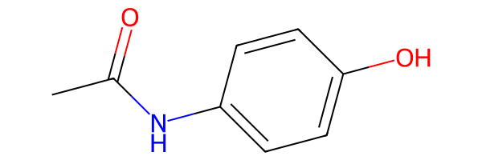
As expected, ugropy fails to obtain the fragmentation of the molecule because the NH group is not covered by any available fragment, leaving free atoms unaccounted for.
First, let’s leverage our knowledge from the previous section to retrieve the complete data from the UNIFAC model’s attributes.
First, the SMARTS DataFrame:
[21]:
subgroups = unifac.subgroups.copy()
subgroups
[21]:
| smarts | molecular_weight | |
|---|---|---|
| group | ||
| CH3 | [CX4H3] | 15.03500 |
| CH2 | [CX4H2] | 14.02700 |
| CH | [CX4H] | 13.01900 |
| C | [CX4H0] | 12.01100 |
| CH2=CH | [CH2]=[CH] | 27.04600 |
| ... | ... | ... |
| NCO | [NX2H0]=[CX2H0]=[OX1H0] | 42.01700 |
| (CH2)2SU | [CH2]S(=O)(=O)[CH2] | 92.11620 |
| CH2CHSU | [CH2]S(=O)(=O)[CH] | 91.10840 |
| IMIDAZOL | [c]1:[c]:[n]:[c]:[n]:1 | 68.07820 |
| BTI | C(F)(F)(F)S(=O)(=O)[N-]S(=O)(=O)C(F)(F)F | 279.91784 |
113 rows × 2 columns
Since UNIFAC is a GibbsModel, we also need to retrieve the fragments information to instantiate a new model:
[22]:
subgroups_info = unifac.subgroups_info.copy()
subgroups_info
[22]:
| subgroup_number | main_group | R | Q | |
|---|---|---|---|---|
| group | ||||
| CH3 | 1 | 1 | 0.9011 | 0.848 |
| CH2 | 2 | 1 | 0.6744 | 0.540 |
| CH | 3 | 1 | 0.4469 | 0.228 |
| C | 4 | 1 | 0.2195 | 0.000 |
| CH2=CH | 5 | 2 | 1.3454 | 1.176 |
| ... | ... | ... | ... | ... |
| NCO | 109 | 51 | 1.0567 | 0.732 |
| (CH2)2SU | 118 | 55 | 2.6869 | 2.120 |
| CH2CHSU | 119 | 55 | 2.4595 | 1.808 |
| IMIDAZOL | 178 | 84 | 2.0260 | 0.868 |
| BTI | 179 | 85 | 5.7740 | 4.932 |
113 rows × 4 columns
Now, lets modify the SMARTS pattern of the ACNH2 fragment to match both ACNH2 and ACNH structures and instantiate a new model with the modified SMARTS pattern:
[23]:
from ugropy import GibbsModel
# Change directly the SMARTS column for the ACNH2 fragment
# now the aromatic carbon could be bonded to either NH2 or NH.
subgroups.loc["ACNH2", "smarts"] = "[cH0][NH2,NH]"
new_unifac = GibbsModel(
subgroups=subgroups,
subgroups_info=subgroups_info,
calculate_r_q=True
)
Now, lets try to fragment the same molecule with our modified UNIFAC model:
[24]:
result = new_unifac.get_groups("CC(=O)NC1=CC=C(O)C=C1", "smiles")
print(result.subgroups)
{'ACH': 4, 'ACOH': 1, 'CH3CO': 1, 'ACNH2': 1}
[25]:
result.draw(width=600)
[25]:
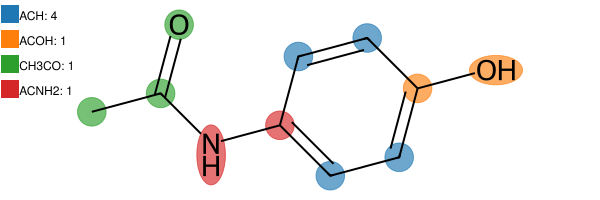
Success! Now, the ACNH structure present in the molecule is successfully detected under the ACNH2 fragment definition.
Understanding which fragment is not being detected
There is an additional technique available for all models that helps you determine whether a specific fragment is being successfully detected within a molecule. This short section serves as a diagnostic bridge between modifying an existing model and creating your own from scratch.
To explore this, we can use the instantiate_mol_object function from ugropy. This function processes any of the molecular identifiers supported by the get_groups method to return an RDKit Mol object.
Additionally, all FragmentationModel instances implement the detect_fragments method. While this method is typically executed internally during the get_groups call, we can call it explicitly to inspect which fragments are captured during the initial direct detection step of the algorithm.
Let’s check the instantiate_mol_object docstring:
[26]:
from ugropy import instantiate_mol_object
help(instantiate_mol_object)
Help on function instantiate_mol_object in module ugropy.core.get_rdkit_object:
instantiate_mol_object(identifier: Union[str, rdkit.Chem.rdchem.Mol], identifier_type: str = 'name') -> rdkit.Chem.rdchem.Mol
Instantiate a RDKit Mol object from molecule's name, SMILES or mol.
In case that the input its already a RDKit Mol object, the function will
return the input object.
Parameters
----------
identifier : str or rdkit.Chem.rdchem.Mol
Identifier of a molecule (name, SMILES or rdkit.Chem.rdchem.Mol).
Example: hexane or CCCCCC for name or SMILES respectively.
identifier_type : str, optional
Use 'name' to search a molecule by name, 'smiles' to provide the
molecule SMILES representation or 'mol' to provide a
rdkit.Chem.rdchem.Mol object, by default "name".
Returns
-------
rdkit.Chem.rdchem.Mol
RDKit Mol object.
Now, let’s test this with the molecule from the previous example, comparing the original UNIFAC model against our modified version (new_unifac). First, using the original model:
[27]:
mol = instantiate_mol_object("CC(=O)NC1=CC=C(O)C=C1", "smiles")
unifac.detect_fragments(mol)
[27]:
{'CH3_0': (0,),
'ACH_0': (5,),
'ACH_1': (6,),
'ACH_2': (9,),
'ACH_3': (10,),
'AC_0': (4,),
'AC_1': (7,),
'OH_0': (8,),
'ACOH_0': (7, 8),
'CH3CO_0': (0, 1, 2)}
As you can observe, the ACNH2 fragment is missing from the detections. Now, let’s run the same check using our modified UNIFAC instance:
[28]:
new_unifac.detect_fragments(mol)
[28]:
{'CH3_0': (0,),
'ACH_0': (5,),
'ACH_1': (6,),
'ACH_2': (9,),
'ACH_3': (10,),
'AC_0': (4,),
'AC_1': (7,),
'OH_0': (8,),
'ACOH_0': (7, 8),
'CH3CO_0': (0, 1, 2),
'ACNH2_0': (4, 3)}
Now, the ACNH2 fragment is successfully detected.
The numbers inside each tuple represent the atom indices occupied by that specific detection. The numeric suffix of each fragment key indicates the distinct occurrences of that fragment type. For example:
ACH_0: (5,)
ACH_1: (6,)
ACH_2: (9,)
ACH_3: (10,)
This indicates that our molecule contains four total ACH fragments, each occupying different atoms (note that implicit hydrogens are never counted as independent atoms in the RDKit library).
User defined fragmentation models
This section will be brief, as it involves advanced Python concepts that are beyond the scope of this tutorial and will not be explained from scratch.
If you want to create your own specialized category of FragmentationModel, you need to master two key elements. First, you must learn the SMARTS notation to define your fragments (covered as a brief introduction in the next section). Second, you need to understand how to extend the behavior of the base FragmentationModel and FragmentationResult classes via inheritance:
from ugropy import FragmentationModel, FragmentationResult
class MyFragModel(FragmentationModel):
...
class MyFragModelResult(FragmentationResult):
...
Maybe you want to create a model that only fragments the molecules without doing anything else. In that case, you can simply instantiate the base FragmentationModel class with the required information as we have seen in the previous section: “Understanding model instances and their configuration”.
On the other hand, maybe you want to create a model that, after detecting the fragments, performs additional operations with them, such as property estimations. The best approach at this point is to check the ugropy source code and learn from it directly (it is not that much code, I promise!).
First, explore the two base classes to understand their core architecture:
Then, you can look at a straightforward extension of the base class, the GibbsModel and its corresponding result class:
In the GibbsModel definition, you will see how the __init__ method is overridden to customize its docstring and incorporate new parameters. Moreover, additional validation filters are implemented in this subclass (while those already present in FragmentationModel are automatically inherited). In GibbsResult, you can check how the calculation of the \(R\) and \(Q\) values is triggered once the fragmentation result is received.
Finally, you can inspect a more complex implementation, specifically its result class, JobackResult. While the underlying logic remains the same, it serves as a more advanced example that demonstrates how ugropy internally integrates the Pint library for unit management:
Every class definition is available in the repository, providing a clear blueprint to build your own custom models.
Finally, there is an optional method in the FragmentationModel base class that we haven’t discussed yet: mol_preprocess.
This method is executed internally during the get_groups call. The algorithm first creates the RDKit Mol object via instantiate_mol_object and then passes that object directly to mol_preprocess. By default, this method returns the molecule unchanged. However, if you inherit from the base class, you can override it to leverage RDKit’s full capabilities to modify the nature of the molecule before any fragment detection takes place. For instance, you could force specific rings to be
considered aromatic (or non-aromatic), sanitize functional groups, or perform advanced structural manipulations tailored to your needs.
That being said, for the majority of use cases, you won’t need to touch this method. Most fragmentation challenges can be resolved simply by defining your SMARTS patterns correctly!
SMARTS tutorial
This is the final piece of the puzzle you need to master to define your own fragmentation models. Before diving in, a quick word of caution: this is not a trivial task. It requires not only a solid grasp of the SMARTS syntax but also an understanding of how fragment definitions can be deeply dependent on the thermodynamic model itself (we will explore some examples of this later).
This brief tutorial is based on the official Daylight documentation, where you can find all the fundamental directives of the SMARTS syntax:
Additionally, RDKit supports certain extended SMARTS features, such as Chemaxon extended SMARTS link nodes, which can be incredibly useful for complex macro-structures:
The first golden rule is: you must strictly follow the SMARTS syntax that RDKit understands. Furthermore, you can inspect the production-ready SMARTS definitions for all built-in models directly in the ugropy repository. While perhaps not exhaustive, they serve as a learning resource:
If you want to open them on excel/LibreOffice, you can download the CSV files directly from the repository and open them with your preferred spreadsheet software. The column separator is the character | (sorry, I didn’t like spaces and all other characters are already used in the SMARTS syntax). Also, you may find the character ? at the beginning of some SMARTS patterns. This character is used to indicate commented lines, which are ignored.
Ultimately, the performance of your custom model will be strictly dictated by how precisely you define your fragments, defining “performance” here as: the model detects the exact fragments I want it to detect for this molecule. For that, testing is crucial (refer to the test book to find some examples of molecules with their SMILES representations).
The basics
In SMARTS (as in SMILES notation), we define chemical structures using specific structural or logical patterns. These structures are read and evaluated from left to right. For example, consider the n-hexane molecule:
[29]:
from rdkit import Chem
smt = Chem.MolFromSmarts("CCCCCC")
smt
[29]:
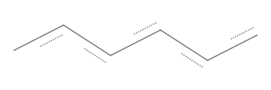
Here, we are defining six aliphatic carbons “bonded” one after the other. I emphasize “bonded” because we are not explicitly specifying the type of bond yet. Let’s explicitly define that these connections are single bonds:
[30]:
smt = Chem.MolFromSmarts("C-C-C-C-C-C")
smt
[30]:
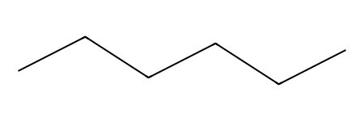
See how the drawing changes? Now we have explicitly defined six aliphatic carbons connected by single bonds.
Let’s add a double bond in the middle:
[31]:
smt = Chem.MolFromSmarts("C-C-C=C-C-C")
smt
[31]:
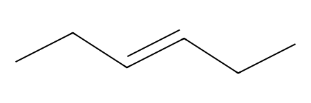
Now, a double bond is specified between positions 3 and 4. As a side note, implicit hydrohens are automatically accounted for in this simplified notation until the standard valence of the atom is satisfied.
This approach feels very similar to writing standard SMILES. However, when defining robust SMARTS patterns for group contribution models, we usually need to enforce the exact connectivity of an atom and specify precisely how many hydrogens are bonded to it. Let’s completely and explicitly define the n-hexane molecule using strict SMARTS syntax:
[32]:
smt = Chem.MolFromSmarts("[CX4H3]-[CX4H2]-[CX4H2]-[CX4H2]-[CX4H2]-[CX4H3]")
smt
[32]:
Nothing seems to change in the visual representation, but we have introduced a lot of new notation. Let’s break it down step by step.
First, the brackets: in SMARTS notation, brackets [] indicate that an atom is being defined by specific logical properties or constraints. The structure [CX4H3] is telling the engine: “This is an aliphatic carbon (C) bonded to four total atoms (X4), and exactly three of those four connections are hydrogens (H3, which sets the explicit hydrogen count).”
Similarly, with [CX4H2], we are specifying an aliphatic carbon bonded to four total atoms, two of which must be hydrogens.
Therefore, when we write [CX4H3]-[CX4H2], we are saying—and pardon the redundancy: “An aliphatic carbon with a total connectivity of 4 and three hydrogens is bonded via a single covalent bond to an aliphatic carbon with a total connectivity of 4 and two hydrogens.”
Let’s define this small substructure ([CX4H3]-[CX4H2]) and search for it within the n-hexane molecule. Naturally, we should find exactly two occurrences:
[33]:
hexane = Chem.MolFromSmiles("CCCCCC") # n-hexane
smt = Chem.MolFromSmarts("[CX4H3]-[CX4H2]")
matches = hexane.GetSubstructMatches(smt)
print("Matches:", matches)
print("Number of matches:", len(matches))
Matches: ((0, 1), (5, 4))
Number of matches: 2
As expected, we found two of these substructures at atom indices (0, 1) and (5, 4).
At this point, an attentive reader might think:
“Well, if I am already enforcing the connectivity of the carbons (X4) and the exact number of hydrogens, explicitly defining the single bond in this particular case seems redundant.”
And you would be absolutely right! In logical terms, these two definitions are completely equivalent:
[CX4H3]-[CX4H2][CX4H3][CX4H2]
But be careful: if you don’t restrict the total connectivity of an atom, it can lead to unexpected false positives. Let’s analyze the pattern [CH2]. Here, we are enforcing the hydrogen count but leaving the total connectivity open. It works perfectly fine for n-hexane:
[34]:
smt = Chem.MolFromSmarts("[CH2]")
hexane = Chem.MolFromSmiles("CCCCCC") # n-hexane
matches = hexane.GetSubstructMatches(smt)
matches
[34]:
((1,), (2,), (3,), (4,))
However, let’s see what happens when we test this exact same pattern against the propene molecule:
[35]:
propene = Chem.MolFromSmiles("C=CC") # propene
smt = Chem.MolFromSmarts("[CH2]")
matches = propene.GetSubstructMatches(smt)
print(matches)
propene
((0,),)
[35]:
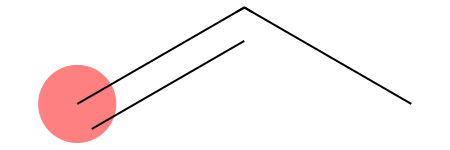
We found a detection! And of course we did: the [CH2] pattern simply asks for any aliphatic carbon with exactly two hydrogens. In propene, the terminal alkene carbon (position 2 or 0 depending on RDKit indexing) satisfies this exact condition.
If your thermodynamic model needs to distinguish between an unreactive aliphatic alkane group and an olefinic group, a generic pattern like [CH2] will ruin your fragmentation parameters. This is precisely where the SMARTS craftsmanship comes into play.
Let’s design two distinct patterns to cleanly separate both cases:
[36]:
# Alkane CH2 (sp3 carbon bonded to 4 atoms total)
alkane_ch2 = Chem.MolFromSmarts("[CX4H2]")
# Alkene CH2 (sp2 carbon bonded to 3 atoms total)
alkene_ch2 = Chem.MolFromSmarts("[CX3H2]")
print("Hexane alkane CH2 matches:", hexane.GetSubstructMatches(alkane_ch2))
print("Hexane alkene CH2 matches:", hexane.GetSubstructMatches(alkene_ch2))
print("Propene alkane CH2 matches:", propene.GetSubstructMatches(alkane_ch2))
print("Propene alkene CH2 matches:", propene.GetSubstructMatches(alkene_ch2))
Hexane alkane CH2 matches: ((1,), (2,), (3,), (4,))
Hexane alkene CH2 matches: ()
Propene alkane CH2 matches: ()
Propene alkene CH2 matches: ((0,),)
While evaluating structures from left to right works perfectly for linear chains, chemistry is full of branched architectures. Using purely linear logic makes it impossible to define non-linear molecules. To solve this, SMARTS introduces parentheses.
Consider the following pattern:
[CX4H3][CX4H2]([OH])[CX4H3]
In chemical terms, we are defining:
[CX4H3]: An aliphatic carbon with four connections and three hydrogens (\(\text{-CH}_3\)).[CX4H2]: An aliphatic carbon with four connections and two hydrogens (\(\text{-CH}_2\text{-}\) before branching).[OH]: A hydroxyl group.
The structure can be read as follows: We have a \(\text{-CH}_3\) group bonded to a carbon, which is simultaneously bonded to both an \(\text{-OH}\) group and another \(\text{-CH}_3\) group. Let’s build and render this structure in RDKit:
[37]:
smt = Chem.MolFromSmarts('[CX4H3][CX4H2]([OH])[CX4H3]')
smt
[37]:
The golden rule for branching is: any atom or chain written inside parentheses is always bonded to the atom immediately to its left (in this case, the [CX4H2] carbon).
If we want to explicitly specify every single bond in this branched structure, notice carefully where the bond dashes - must be placed:
[38]:
smt = Chem.MolFromSmarts('[CX4H3]-[CX4H2](-[OH])-[CX4H3]')
smt
[38]:
What happens if we have multiple branches bonded to the same central atom? In that case, we simply append another set of parentheses consecutive to the first one:
[39]:
# A central CH2 bonded to an -OH branch and a -CH2-CH3 branch
molecule = Chem.MolFromSmarts("[CH3]-[CH2](-[OH])(-[CH2]-[CH3])-[CH3]")
molecule
[39]:
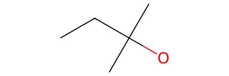
Now, the central [CX4H2] carbon is simultaneously bonded to two distinct branches: one containing a hydroxyl group (-[OH]) and another containing an ethyl chain (-[CX4H2]-[CX4H3]).
The rule remains unshakable: all parentheses are attached directly to the atom immediately to their left. Furthermore, this logic is perfectly scalable, meaning you can nest parentheses inside other parentheses to build as many complex sub-branches as your thermodynamic model requires!
Finally, to conclude the core basics of SMARTS syntax, we have rings. This is incredibly useful for defining specific aromatic or aliphatic cyclic fragments.
How do we define a ring? We use numbers. By labeling two separate atoms with the same digit, we instruct the engine to form a bond between them, effectively bridging the gap and bypassing the strict left-to-right progression. For example, a cyclohexane ring can be defined as follows:
[40]:
# Check the first and the last [CX4H2] have a 1, they are going to be bonded
smt = Chem.MolFromSmarts("[CX4H2]1[CX4H2][CX4H2][CX4H2][CX4H2][CX4H2]1")
smt
[40]:
If your molecule contains multiple rings, you can use different numbers to define each individual cycle. For example, consider this bicyclic system:
[41]:
# A bicyclic system combining a 6-membered and a 5-membered ring
smt = Chem.MolFromSmarts("[CX4H2]1[CX4H2][CX4H]2[CX4H2][CX4H2][CX4H2][CX4H2][CX4H]2[CX4H2][CX4H2]1")
smt
[41]:
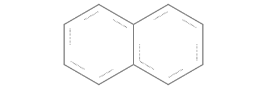
Let’s carefully analyze where the ring labels are placed to understand the connectivity:
[CX4H2] 1 [CX4H2][CX4H] ([CX4H2][CX4H2][CX4H2][CX4H2] 2 ) [CX4H] 2 [CX4H2][CX4H2] 1
Here is how the engine interprets it:
The labels 1 open and close the main 6-membered ring.
Inside that main ring, we encounter the first bridgehead carbon (
[CX4H]), which opens the second ring (in the parenthesis).The structure then continues along a linear chain of four
[CX4H2]groups.At the end of this chain the final
[CX4H2]is labeled with a 2, the second bridgehead carbon ([CX4H]) is also labeled with a 2, closing the second ring and fusing the two cycles together.
(Note: Notice that the bridgehead carbons are defined as [CX4H] instead of [CX4H2], because they are bonded to three heavy atoms total, leaving room for only one hydrogen).
Logical operators, ring constraints, and aromaticity
What happens when we want to define a fragment that must only be detected if it is part of an aliphatic ring? To achieve this level of control, we need to utilize SMARTS logical expressions:
!: “NOT” (highest precedence)&: “AND” (high precedence),: “OR” (low precedence);: “AND” (lowest precedence)
Precedence here follows the exact same concept as in any programming language: operators are evaluated in a specific order. High-precedence operators are resolved first. It is important to note that you cannot use parentheses to group logical operations in SMARTS, because parentheses are strictly reserved for chemical branching.
To illustrate how precedence changes the evaluation order, consider the operands \(A\), \(B\), and \(C\):
A&B,C
This expression means “either (\(A\) AND \(B\)), or \(C\)”, which translates mathematically to \((A \wedge B) \vee C\). The high-precedence & operator is evaluated first.
On the other hand:
A;B,C
This expression means “\(A\) AND (\(B\) or \(C\))”, which translates mathematically to \(A \wedge (B \vee C)\). The low-precedence ; operator is evaluated last, effectively binding the entire “OR” block that precedes it.
Now, imagine you want to define two different \(-\text{CH}_2-\) fragment types: one that must be part of an aliphatic ring (like in cyclohexane) and another that must strictly belong to an open chain (like in n-hexane). We can cleanly separate them using the ring membership primitive R combined with our logical operators:
[42]:
cyclohexane = Chem.MolFromSmiles("C1CCCCC1") # Cyclohexane
hexane = Chem.MolFromSmiles("CCCCCC") # n-Hexane
# CH2 must NOT be part of a ring
ch2_chain = Chem.MolFromSmarts("[CX4H2;!R]")
# CH2 MUST be part of a ring
ch2_ring = Chem.MolFromSmarts("[CX4H2;R]")
print("Cyclohexane ring CH2 matches:", cyclohexane.GetSubstructMatches(ch2_ring))
print("Cyclohexane chain CH2 matches:", cyclohexane.GetSubstructMatches(ch2_chain))
print("Hexane ring CH2 matches:", hexane.GetSubstructMatches(ch2_ring))
print("Hexane chain CH2 matches:", hexane.GetSubstructMatches(ch2_chain))
Cyclohexane ring CH2 matches: ((0,), (1,), (2,), (3,), (4,), (5,))
Cyclohexane chain CH2 matches: ()
Hexane ring CH2 matches: ()
Hexane chain CH2 matches: ((1,), (2,), (3,), (4,))
In the expression [CX4H2;!R], the engine interprets the logic as: “This is an aliphatic carbon with a total connectivity of 4 and exactly two hydrogens, AND it is NOT part of a ring.” The ! operator negates the R primitive, ensuring no cyclic carbons are matched.
Conversely, in the expression [CX4H2;R], we are enforcing the opposite constraint: “This is an aliphatic carbon with a total connectivity of 4 and exactly two hydrogens, AND it MUST be part of a ring.”
You can also specify the exact size of the ring by using a numeric value after the lowercase r primitive. For example, [CX4H2;r5] will strictly match aliphatic carbons that are part of a 5-membered ring:
[43]:
cyclopentane = Chem.MolFromSmiles("C1CCCC1") # cyclopentane
ch2_5ring = Chem.MolFromSmarts("[CX4H2;r5]") # CH2 must be part of a 5-membered ring
print("Cyclopentane 5-membered ring CH2 matches:", cyclopentane.GetSubstructMatches(ch2_5ring))
print("cyclohexane 5-membered ring CH2 matches:", cyclohexane.GetSubstructMatches(ch2_5ring))
Cyclopentane 5-membered ring CH2 matches: ((0,), (1,), (2,), (3,), (4,))
cyclohexane 5-membered ring CH2 matches: ()
Note the lowercase r5 used to indicate the ring size. If you accidentally use an uppercase R5, the meaning changes completely: the engine will search for a CX4H2 carbon that belongs to five different rings simultaneously.
Finally, how do we define an aromatic fragment? In many cases, you don’t even need explicit logical operators for this. Instead, you can simply use the lowercase atom primitives to indicate aromaticity.
For example, [cH] defines an aromatic carbon with exactly one hydrogen, while [cH0] defines an aromatic carbon with no hydrogens. In SMARTS (and SMILES), lowercase atom symbols always denote aromatic atoms, whereas uppercase symbols specify aliphatic ones.
By combining what we have learned so far, we can build highly specific filters. For instance, if you need to target an aromatic carbon with one hydrogen inside an 8-membered ring, you can write: [cH;r8].
[cH0;R1]may seem redundant at first glance, since an aromatic atom is by definition always part of a ring system. However, if your model needs to strictly distinguish peripheral aromatic carbons from those at a ring fusion, enforcing theR1constraint becomes mandatory to prevent cross-contamination.[cH0;R2]is NOT redundant: This pattern specifically targets an aromatic carbon with no hydrogens that is shared by exactly two different rings simultaneously (a bridgehead fusion carbon).
Let’s visualize this distinction using a naphthalene:
[44]:
ac_onering = Chem.MolFromSmarts("[cH0;R1]") # Aromatic carbon only in one ring
ac_tworings = Chem.MolFromSmarts("[cH0;R2]") # Aromatic carbon on two rings simultaneously
molecule = Chem.MolFromSmiles("CC1=CC2=C(C=CC=C2)C=C1") # Naphthalene
molecule
[44]:
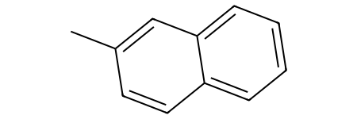
With the fragments we have defined, we can differentiate between the different aromatic carbons with no hydrogens:
[45]:
molecule.GetSubstructMatches(ac_onering)
molecule
[45]:
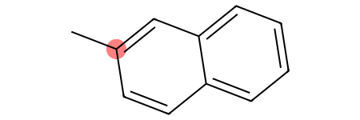
[46]:
molecule.GetSubstructMatches(ac_tworings)
molecule
[46]:
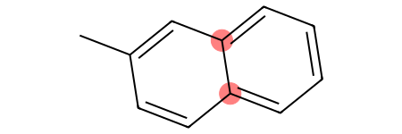
Finally, it is possible to define a pattern that matches an element regardless of whether it is aliphatic or aromatic. This is extremely powerful for generalization and can be applied to any element in the periodic table.
To define a generic element, you use the # primitive followed by its atomic number. For instance, carbon is represented by #6. Every other constraint we have learned so far (connectivity, hydrogen count, ring constraints) remains fully applicable:
[#6H]: A carbon atom (either aliphatic or aromatic) with an unspecified total connectivity, but possessing exactly one hydrogen.[#6X3H]: A carbon atom (either aliphatic or aromatic) with a total connectivity of 3 and exactly one hydrogen.[#7X3H2]: A nitrogen atom (either aliphatic or aromatic) with a total connectivity of 3 and exactly two hydrogens.
More complex logical patterns and recursive SMARTS
ugropy requires you to provide a single, unique SMARTS pattern for each distinct fragment. For that reason, isolating complex groups requires a combination of creativity and advanced logic to ensure RDKit identifies exactly the atoms belonging to that fragment, without accidentally matching the surrounding environment.
Let’s inspect a real-world example from ugropy. The Dortmund UNIFAC model differentiates between three different types of hydroxyl groups: primary, secondary, and tertiary.
[47]:
from ugropy import dortmund
# Let's inspect the SMARTS for Dortmund UNIFAC OH subgroups
dortmund.subgroups.loc[["OH (P)", "OH (S)", "OH (T)"], "smarts"].to_list()
[47]:
['[OH;$([OH][CX4H0]([!#6])([!#6])[#6]),$([OH][CX4H]([!#6])[#6]),$([OH][CX4H2][#6]),$([OH][CX3H]=[#6]),$([OH][CX3H0](=[#6])[!#6]),$([OH][CX2]#[#6])]',
'[OH;$([OH][CX4H0]([!#6])([#6])[#6]),$([OH][CX4H]([#6])[#6]),$([OH][CX3H0](=[#6])[#6])]',
'[OH;$([OH][#6]);$([OH][CX4H0]([#6])([#6])[#6])]']
This is where things get interesting because we are introducing a highly advanced notation.
Let’s dissect the tertiary hydroxyl group (OH (T)). By definition, a tertiary hydroxyl is an \(-\text{OH}\) group bonded to a tertiary carbon (a carbon bonded to three other carbon atoms).
Here is the tricky part for ugropy: we only want to match and count the \(-\text{OH}\) group itself, not the carbons that it is attached to.
If we try to define it using the basic linear and branching syntax we learned before, we might instinctively write something like this:
[OH][#6]([#6])([#6])([#6])
While it is chemically intuitive—an \(-\text{OH}\) group bonded to a carbon that is simultaneously bonded to three other carbons—if we feed this pattern to RDKit, the engine will return a match that includes all five atoms in that cluster.
Let’s see this issue in action with a branched alcohol:
[48]:
molecule = Chem.MolFromSmiles("OC(CCC)(C)(CC)")
molecule
[48]:
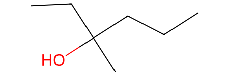
There we clearly have a tertiary hydroxyl group, let try to search for matches:
[49]:
smt_naive = Chem.MolFromSmarts("[OH][#6]([#6])([#6])([#6])")
print("Naive matches:", molecule.GetSubstructMatches(smt_naive))
molecule
Naive matches: ((0, 1, 2, 5, 6),)
[49]:
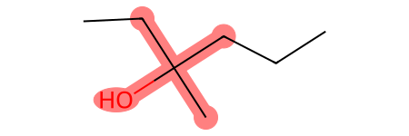
Of course, the definitions currently in ugropy are far from perfect. However, by critiquing my own past implementations, we can uncover some incredibly valuable lessons. The tertiary hydroxyl group is defined in ugropy as follows:
[OH;$([OH][#6]);$([OH][CX4H0]([#6])([#6])[#6])]
First, let’s look at the outer brackets [] enclosing the entire structure. As we established earlier, brackets allow us to define a single target atom using specific logical constraints. Up until now, we have restricted atoms by their aliphatic/aromatic nature, total connectivity, hydrogen count, or ring status. Now, we are introducing a new superpower: Recursive SMARTS.
When building a complex pattern like this from scratch, you should always start by writing the outer brackets:
[]
Next, ask yourself: What single atom am I actually trying to isolate and count? Since only the hydroxyl group should be counted when this fragment is matched, our primary target is the OH group. So, we place it inside:
[OH]
Now, we can append our environmental constraints. A Recursive SMARTS expression allows us to specify a structural pattern that must exist around our target atom without actually matching or “claiming” those neighboring atoms. This is done using the $() syntax, joined by our low-precedence AND (;) operator:
[OH;$()]
This translates to: “Match a hydroxyl group AND (;) ensure that this exact oxygen is part of the structural environment described inside the parenthesis $().”
The first recursive condition in the ugropy pattern is:
[OH;$([OH][#6])]
Here, we are saying: “Match a hydroxyl group, but only if it is part of a larger [OH][#6] environment (meaning it must be directly bonded to a carbon of any nature).”
We can chain as many of these recursive conditions as we need by using additional low-precedence AND (;) operators. This brings us to the full ugropy expression:
[OH;$([OH][#6]);$([OH][CX4H0]([#6])([#6])[#6])]
For the match to be successful, our target OH must now also satisfy this second environmental checkpoint:
$([OH][CX4H0]([#6])([#6])[#6])
Which explicitly states: “The hydroxyl group must be part of an environment where it is bonded to an aliphatic carbon with a total connectivity of 4 and zero hydrogens ([CX4H0]), which in turn is bonded to three other carbons of any nature ([#6]).”
Time for some self-critique! Looking back at my past code, the first condition ($([OH][#6])) is kind of redundant. Why? Because the second, much stricter condition already mandates that the OH must be bonded to a carbon. If it satisfies the second environment, it automatically satisfies the first one.
But as I mentioned, the definitions in ugropy are a work in progress—and making (and analyzing) these redundant steps is exactly how we master SMARTS craftsmanship!
Let’s use this pattern to search for tertiary hydroxyl groups in the previous molecule:
[50]:
molecule = Chem.MolFromSmiles("OC(CCC)(C)(CC)")
smt = Chem.MolFromSmarts("[OH;$([OH][#6]);$([OH][CX4H0]([#6])([#6])[#6])]")
print("Tertiary hydroxyl groups:", molecule.GetSubstructMatches(smt))
molecule
Tertiary hydroxyl groups: ((0,),)
[50]:
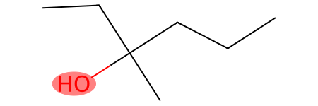
Now, let’s look at one final example that demonstrates how the presence of other groups within a fragmentation model can heavily influence how you design the logic of a single fragment.
The fragment in question seems fairly simple: the classic UNIFAC ketone fragment (CH3CO). This group consists of a methyl carbon bonded to a carbonyl carbon (a carbon with zero hydrogens, double-bonded to an oxygen). The pattern must match exactly those two carbons and the oxygen atom.
It seems easy enough. Let’s build it directly and intuitively:
[CX4H3][CX3H0]=O
And basically, that’s it! It looks flawless. However, let’s see how it is actually defined in ugropy:
[51]:
from ugropy import unifac
unifac.subgroups.loc["CH3CO", "smarts"]
[51]:
'[CH3][CH0;!$(C(-[O,NH2,$([NH][CH3]),$([NH][CH2]),$([NH0]([CH3])[CH3]),$([NH0]([CH3])[CH2]),$([NH0]([CH2])[CH2])])=O)]=O'
Well, what a masterpiece of a mess! Let’s break down what is happening here. First, let’s look at the straightforward components of this beast:
[CH3][CH0;!$(C(-[O,NH2,$([NH][CH3]),$([NH][CH2]),$([NH0]([CH3])[CH3]),$([NH0]([CH3])[CH2]),$([NH0]([CH2])[CH2])])=O)]=O
We can dissect it into three main parts:
[CH3]: The methyl group. Simple enough. This is directly bonded to the logical nightmare in the middle.[CH0; with a lot of conditions]: The carbonyl carbon, which contains all the protective constraints.=O: The double bond connecting the carbonyl carbon to its oxygen.
The entire challenge lies in decoding the environmental conditions imposed on that central carbonyl carbon:
[CH0;!$(C(-[O,NH2,...])=O)]
Here, we are applying the structural filter we just learned: [CH0;!$()] (“This is a carbonyl carbon, AND IT MUST NOT match the following environments”).
Essentially, we are telling RDKit: “It is a carbonyl, but it cannot be bonded to X, or Y, or Z.” Let’s look at what we are excluding:
-[O...]: The carbonyl carbon must not have a single bond to an oxygen. If it did, this group would actually be an ester or a carboxylic acid. We definitely don’t want a ketone pattern falsely triggering there.NH2,[NH][CH3],[NH][CH2], …: These represent the various amide patterns parameterized within this UNIFAC model. Above all, we want to prevent molecules that should be resolved as amides from prematurely converging into a ketone due to a multiplicity of valid matching paths. By explicitly excluding these environments, we ensure that the more specific amide group takes priority, preventing the simpler ketone pattern from cannibalizing its atoms.
This is a prime example of how the presence of other functional groups within a model can force you to transform a straightforward SMARTS pattern into a highly complex, defensive one. Of course, you could still define the ketone as easily as we saw at the beginning—but only if you don’t mind dealing with the chaos of multiple overlapping solutions and prioritization errors later on during the fragmentation process.
Link-nodes
ugropy supports Chemaxon-style link-nodes, though it implements them in a custom way to fit its .csv storage format. For a deeper dive into the theory, please check the official Chemaxon documentation, or inspect the abdulelah_gani model definitions for real-world examples of how this is structured:
[52]:
from ugropy import abdulelah_gani
# Inspecting a link-node pattern in the Gani model
abdulelah_gani.tertiary_model.subgroups.iloc[0]["smarts"]
[52]:
'[CH0;$([CH0]([OH])=O)][CX4H2;!R][CH0;$([CH0]([OH])=O)] LN:1:3.20:2'
Since RDKit does not natively support link-nodes infinitely, ugropy expands these custom definitions up to a user-defined threshold.
When writing these patterns, you must specify an upper limit for the repetition size that you consider large enough for your systems. Keep in mind that there is an inherent trade-off: the larger the repetition limits, the higher the computational cost during the substructure detection phase.